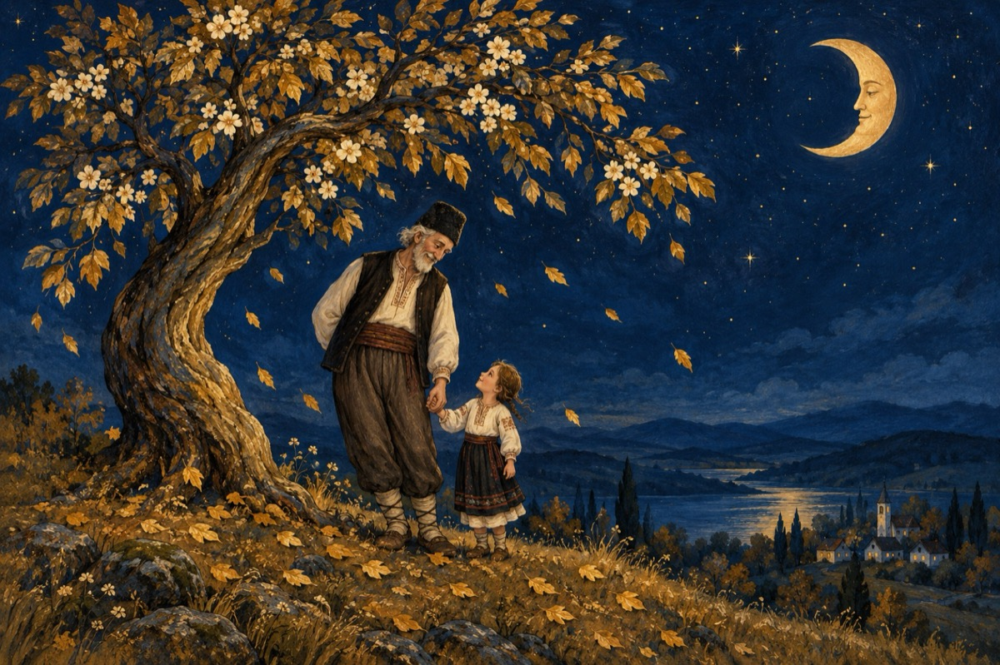

Leagănă-te
Leagănă-te pomule
Ca și tine omule
Cum a mai spus cineva!
De ce nu te-ai legăna?
Omule și pomule
Leagănă durerile
Și faceți-o amândoi
E să scăpați de nevoi
Ție îți cad frunzele
Când te ajung toamnele
Primăvara înflorești
Viața din nou ți-o trăiești
Omule, rostul tău e să rodești
Pământul să-l stăpânești
Și să lași în urma ta
Pe-acel ce te va urma!
Anii vin, anii se duc,
Ca și frunza de sub nuc.
Leagănă-te fericit
Că-ai trăit și că trăiești
Prin urmașii ce-au venit
Pământul să-l moștenești!
Vasile Groza